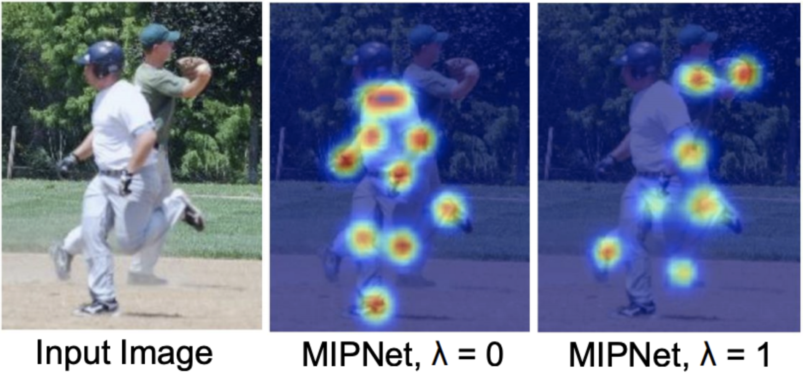
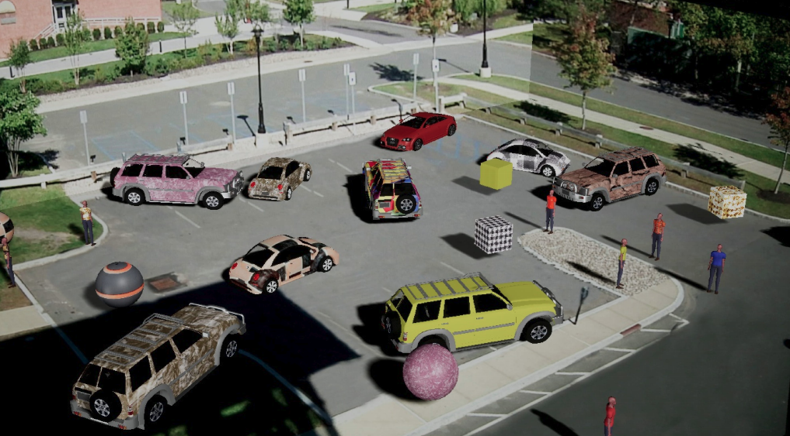

|  |
Multi-Instance Pose Networks: Rethinking Top-Down Pose Estimation
Rawal Khirodkar, Visesh Chari, Amit Agrawal, Ambrish Tyagi
ICCV 2021
pdf |
abstract |
bibtex |
A key assumption of top-down human pose estimation approaches is their expectation of having a single person/instance present in the input bounding box. This often leads to failures in crowded scenes with occlusions. We propose a novel solution to overcome the limitations of this fundamental assumption. Our Multi-Instance Pose Network (MIPNet) allows for predicting multiple 2D pose instances within a given bounding box. We introduce a Multi-Instance Modulation Block (MIMB) that can adaptively modulate channel-wise feature responses for each instance and is parameter efficient. We demonstrate the efficacy of our approach by evaluating on COCO, CrowdPose, and OCHuman datasets. Specifically, we achieve 70.0 AP on CrowdPose and 42.5 AP on OCHuman test sets, a significant improvement of 2.4 AP and 6.5 AP over the prior art, respectively. When using ground truth bounding boxes for inference, MIPNet achieves an improvement of 0.7 AP on COCO, 0.9 AP on CrowdPose, and 9.1 AP on OCHuman validation sets compared to HRNet. Interestingly, when fewer, high confidence bounding boxes are used, HRNet's performance degrades (by 5 AP) on OCHuman, whereas MIPNet maintains a relatively stable performance (drop of 1 AP) for the same inputs.
@article{DBLP:journals/corr/abs-2101-11223,
author = {Rawal Khirodkar and
Visesh Chari and
Amit K. Agrawal and
Ambrish Tyagi},
title = {Multi-Hypothesis Pose Networks: Rethinking Top-Down Pose Estimation},
journal = {CoRR},
volume = {abs/2101.11223},
year = {2021},
url = {https://arxiv.org/abs/2101.11223},
archivePrefix = {arXiv},
eprint = {2101.11223},
timestamp = {Sun, 31 Jan 2021 17:23:50 +0100},
biburl = {https://dblp.org/rec/journals/corr/abs-2101-11223.bib},
bibsource = {dblp computer science bibliography, https://dblp.org}
}
|
|
RePOSE: Real-Time Iterative Rendering and Refinement for 6D Object Pose Estimation
Shun Iwase, Xingyu Liu, Rawal Khirodkar, Rio Yokota, Kris M. Kitani
ICCV 2021
pdf |
abstract |
bibtex |
The use of iterative pose refinement is a critical processing step for 6D object pose estimation, and its performance depends greatly on one's choice of image representation. Image representations learned via deep convolutional neural networks (CNN) are currently the method of choice as they are able to robustly encode object keypoint locations. However, CNN-based image representations are computational expensive to use for iterative pose refinement, as they require that image features are extracted using a deep network, once for the input image and multiple times for rendered images during the refinement process. Instead of using a CNN to extract image features from a rendered RGB image, we propose to directly render a deep feature image. We call this deep texture rendering, where a shallow multi-layer perceptron is used to directly regress a view invariant image representation of an object. Using an estimate of the pose and deep texture rendering, our system can render an image representation in under 1ms. This image representation is optimized such that it makes it easier to perform nonlinear 6D pose estimation by adding a differentiable Levenberg-Marquardt optimization network and back-propagating the 6D pose alignment error. We call our method, RePOSE, a Real-time Iterative Rendering and Refinement algorithm for 6D POSE estimation. RePOSE runs at 71 FPS and achieves state-of-the-art accuracy of 51.6% on the Occlusion LineMOD dataset - a 4.1% absolute improvement over the prior art, and comparable performance on the YCB-Video dataset with a much faster runtime than the other pose refinement methods.
@article{DBLP:journals/corr/abs-2104-00633,
author = {Shun Iwase and
Xingyu Liu and
Rawal Khirodkar and
Rio Yokota and
Kris M. Kitani},
title = {RePOSE: Real-Time Iterative Rendering and Refinement for 6D Object
Pose Estimation},
journal = {CoRR},
volume = {abs/2104.00633},
year = {2021},
url = {https://arxiv.org/abs/2104.00633},
archivePrefix = {arXiv},
eprint = {2104.00633},
timestamp = {Mon, 12 Apr 2021 16:14:56 +0200},
biburl = {https://dblp.org/rec/journals/corr/abs-2104-00633.bib},
bibsource = {dblp computer science bibliography, https://dblp.org}
}
|
|  |
Domain Randomization for Scene-Specific Car Detection and Pose Estimation
Rawal Khirodkar, Donghyun Yoo, Kris M. Kitani
WACV 2019
pdf |
abstract |
bibtex |
code |
We address the issue of domain gap when making use of synthetic data to train a scene-specific object detector and pose estimator. While previous works have shown that the constraints of learning a scene-specific model can be leveraged to create geometrically and photometrically consistent synthetic data, care must be taken to design synthetic content which is as close as possible to the real-world data distribution. In this work, we propose to solve domain gap through the use of appearance randomization to generate a wide range of synthetic objects to span the space of realistic images for training. An ablation study of our results is presented to delineate the individual contribution of different components in the randomization process. We evaluate our method on VIRAT, UA-DETRAC, EPFL-Car datasets, where we demonstrate that using scene specific domain randomized synthetic data is better than fine-tuning off-the-shelf models on limited real data.
@inproceedings{khirodkar2019domain,
title={Domain randomization for scene-specific car detection and pose estimation},
author={Khirodkar, Rawal and Yoo, Donghyun and Kitani, Kris},
booktitle={2019 IEEE Winter Conference on Applications of Computer Vision (WACV)},
pages={1932--1940},
year={2019},
organization={IEEE}
}
|
|
{kind=link}
{kind=link}
{kind=link}
{kind=link}